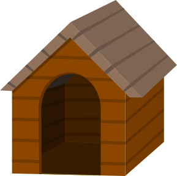

Quando trouxer um amigo para casa, prepare um cantinho para ele bem quentinho e aconchegante, uma caixa ou uma caminha, forre com um cobertor velho ou um pano mesmo. Se possível traga algo com o cheiro do antigo lar dele, para que ele não estranhe tanto e sinta mais avontade, com ambiente. E se for um filhotinho, coloque um relógio envolto em um tecido, isso ajudara o seu amiguinho, pois parecera o coração de sua mãe, e você ainda pode aquecer uma garrafa, apenas para amornala, e enrola la em uma toalha e colocar em sua caminha.
Deixe sempre agua fresca para ele, longe do sol. Evite dar restos e alimentos humanos para ele, pois só a ração tem as proteínas, vitaminas e minerais que ele precisa na doze certa, caso voce tenha duvida da quantidade, verifique no rotulo da embalagem da ração de sua preferencia. Nunca deixe a comida mais de uma hora exposta ao tempo, caso ele não a consuma retire, se ele recusar mais de três refeições procure um medico veterinário.
Procure sempre abrigar a casa ou caminha do seu cão longe do sol e da chuva, mesmo que conte com telhado na casinha.
Procure escova-los diariamente, no caso do pelo ser muito longo, considere tosa-lo no verão, pois eles sentem mais calor do que cães com pelo curto. Dê banhos apenas quando estiverem sujos pois banho em excesso pode ressecar sua pele e pelagem, use sempre produtos destinado a cães e de preferencia com cheiros suaves, pois cheiros fortes podem incomodar e prejudicar o faro dos cães.
Cães adoram morder, e se não tiverem o que serão suas coisas, então compre brinquedos para ele, nunca de brinquedos que soltam lascas nem pedaços, de preferencia a brinquedos plástico , náilon ou borracha. Os brinquedos são ainda mais importantes para filhotes, pois sua dentição esta sendo formada e eles precisão estimular seus dentes.
Para acostumar seu cão com avida social e a convivência com outros animais, passeie com ele desde filhote, parta que se acostume com outros cheiros ne pessoas, sempre q ele tiver alguma atitude negativa como rosnar ou pular em alguém, repreenda-o com um duro e firme “NÃO”.
Para que seu cão não fique ansioso em casa, treine-o. pegue sua chave, sai por dois ou três minutos, faça isso e vá gradativamente aumentando, para que ele se acostume. Procure deixar uma televisão ou radio ligado para que possa ouvir vózes de outros humanos.
Endereço:
Matriz - Av. João Paulo II, nº 316 - Jardim Santa Tereza - Embu das Artes - SP
Filial 1 - Rua Cachoeira, nº 2257 - Jardim Rosa de França - Guarulhos - SP
Filial 2 - Rua Mazagão, nº 47 - Cidade Patriarca - São Paulo - SP
Filial 3 - Av. Paulista, nº 500 - Bela Vista - São Paulo - SP